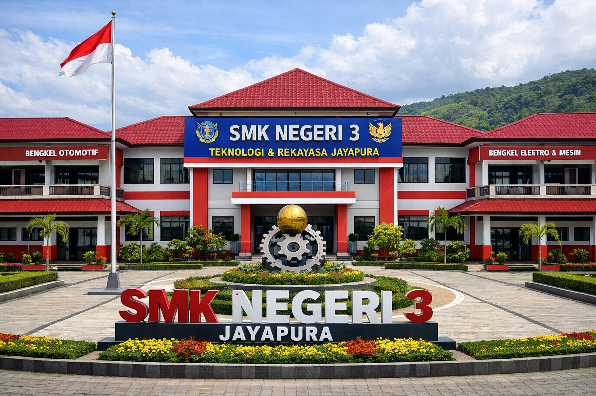

SMK Negeri 3 Teknologi & Rekayasa Kota Jayapura hadir sebagai institusi pendidikan vokasi yang berkomitmen mencetak lulusan yang kompeten, disiplin, dan siap menghadapi tantangan dunia kerja.

Sekolah ini berfokus pada pengembangan kompetensi siswa dalam bidang teknologi dan rekayasa melalui proses pembelajaran yang sistematis, berbasis praktik, dan didukung lingkungan belajar yang kondusif.
Selain mendorong penguasaan keterampilan teknis, sekolah juga menanamkan nilai-nilai disiplin, tanggung jawab, kerja sama, kreativitas, dan kesiapan menghadapi dunia industri maupun jenjang pendidikan berikutnya.
Pembinaan sikap, etika, dan budaya kerja.
Fokus pada keterampilan kerja yang aplikatif.
Menyesuaikan kompetensi dengan kebutuhan lapangan.
Mendorong kreativitas dan pemecahan masalah.